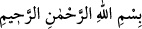
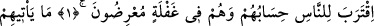
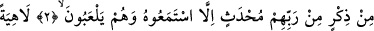
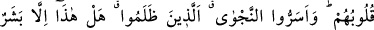
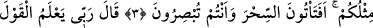
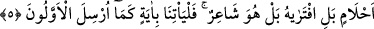
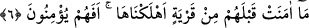
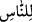

HESABA ÇEKİLECEKLERİ
GÜN YAKLAŞTI
Rahmân ve Rahîm (olan) Allâh’ın adıyla
1. İnsanların hesaba çekilecekleri (gün) yaklaştı. Hâl böyle iken onlar, gaflet
içinde yüz çevirmektedirler.
2. Rablerinden kendilerine ne zaman yeni bir ihtar gelse, onlar bunu, hep alaya
alarak dinlerler.
3. Kalpleri hep eğlencede (gaflette), hem o zalimler şu gizli fısıltıyı yaptılar: “Bu
(Muhammed), sizin gibi bir beşer olmaktan başka nedir ki! Siz şimdi gözünüz göre
göre büyüye mi kapılıyorsunuz?”
4. (Peygamber) dedi ki: “Rabbim, yerde ve gökte (söylenmiş) her sözü bilir. O,
hakkıyla işiten ve bilendir.”
5. Onlar: “Hayır, (bunlar) saçma sapan rüyalardır; bilakis onu kendisi
uydurmuştur; belki de o, şairdir. (Eğer öyle değilse) bize hemen, öncekilere
gönderilenin benzeri bir âyet getirsin.” dediler.
6. Bunlardan önce helâk ettiğimiz hiçbir belde îman etmemişti; şimdi bunlar mı
îman edecekler?
“İnsanların hesaba çekilecekleri (gün) yaklaştı.”
el-Uyûn’da der ki: “Burada “ kelimesinin fâilin önüne alınması, çabucak korku
salmak içindir. Çünkü, ilk baştan yaklaşmanın insanlara nisbet edilmesi, onların
moralini bozacak, yaklaşan şeyden korkup endişe etmelerini sağlayacak hususlardandır.
“İnsanlar”dan murad, Mekke halkından öldükten sonra diriltilmeyi inkâr eden
müşriklerdir. Nitekim âyetin devamında bahsedilen gaflet, yüz çevirme ve benzeri